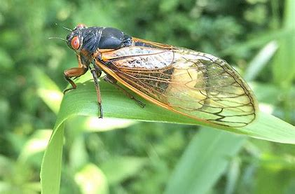
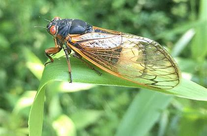

About Us
Follow Us

Intresting Facts About Camel!
- Camel's ears are furry.
- Camel can move easily across the sand because of its specially designed feet.
- When they find water they will drink as much as possible

Intresting Facts About Chameleon!
Chameleons are reptiles that are part of the iguana subborder
Changing skin color is an importantpart of communication among Chameleons
Most Chameleons have a prehensile tail that they use to wrap around tree branches

Intresting Facts About Pigeon!
Pigeons are incredibly complex and intelligent animals.
Pigeons are renowned for thies outstanding navigational abilities.
Pigeons have excellent hearing abilities.
 

Intresting Facts About Pigeon!
The cicadas are a superfamily, the Cicadoidea, of insects in the order Hemiptera.
They are in the suborder Auchenorrhyncha, along with smaller jumping bugs such as leafhoppers and froghoppers.
cicadas can be found throughout the world, periodicals are unique to North America.

Intresting Facts About Panda!
The giant panda, also known as the panda bear or simply the panda, is a bear native to South Central China.
It is characterised by its bold black-and-white coat and rotund body.
Bamboo is critical to their diet